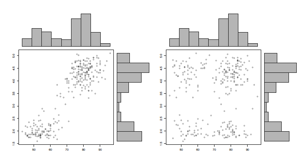
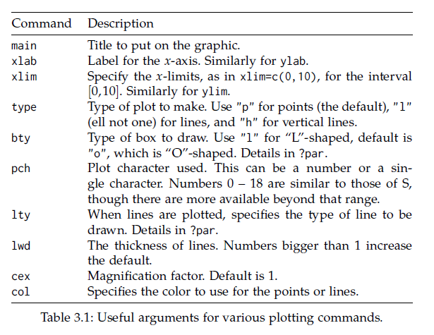
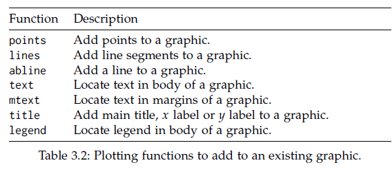
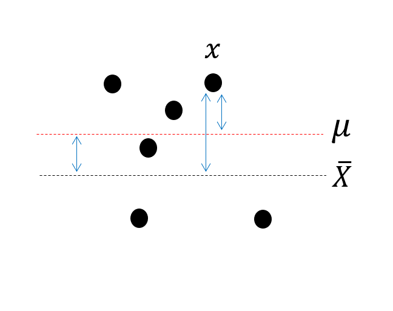

Chapter 4 Bivariate data
4.1 Introduction
본 단원에서는 두 변수를 동시에 고려할 경우 각 변수가 가지고 있는 데이터를 비교하여 변수간의 유사성이나 관계 (상관, 독립)에 대한 설명하는 방법을 소개하며 짝데이터 (Paired data)나 범주형 데이터의 경우에 두 변수의 관계를 어떻게 설명하는지 알아봅니다. 또한 그래프를 이용하여 두 변수의 관계를 가시화 하는 방법에 대해 알아보겠습니다.
4.1.1 Independence samples

위 그림은 두 변수간 (x, y축) 관계를 산점도와 marginal histogram을 이용하여 비교한 그림 입니다. Marginal histogram은 두 그래프가 비슷한 모양을 하고 있지만 왼쪽 그림은 두 변수간 강한 양의 상관관계를 보여주고 있으며 오른쪽은 두 변수가 아무런 관계도 아닌 독립임을 보여줍니다.
두 변수간의 관계를 설명할 때 가장 일반적인 경우의 데이터 형태는 코흐트 데이터 입니다. 처리군과 대조군으로 이루어진 데이터를 말하며 플라시보 (Placebo effect) 효과를 방지하기 위해서 실제 효과는 없지만 대조군에 처리한 조건과 동일한 조건의 처리를 수행합니다.
위 데이터는 비트의 효과를 검증하기 위해 각 실험자의 달리는 시간을 측정하고 비교한 데이터 입니다. 이 데이터를 보고 알 수 있는 사실은 무엇이 있을까요? 우리가 앞서 단원에서 대푯값을 배웠으니 이를 고려해서 질문을 다시 생각해 봅시다.
- 가장 오래 달린 세 명이 no beet 그룹에 있음
- 가장 적게 달린 한 사람이 beet 그룹에 있음
- center, spread 또는 shape가 유사한가?
이 후 단원에서 randomness가 가정된 상태에서 위 질문들에 대한 해답을 찾는 과정을 배우게 될 것입니다.
4.1.2 plot
두 변수에 대한 관계를 가장 먼저 그리고 가장 직관적으로 설명하는 방법은 그래프 입니다. 줄기잎 차트나 dot-plot 등은 많이 쓰이지 않으나 boxplot과 산점도는 (dot-plot) 데이터 분석을 수행하기 전에 변수들간의 관계를 대략적으로 가늠해 볼 수 있기 때문에 많이 사용되고 있습니다.
dotchart(c(beets, no_beets))
dotchart(c(beets, no_beets), groups=factor(c(rep("beets", length(beets)), rep("no_beets", length(no_beets)))))boxplot에서는 대략 다섯 가지 대표값을 볼 수 있습니다. 1사분위수, 2사분위수(중간값), 3사분위수, 그리고 최대, 최소값입니다. 여기서 최대 최소는 IQR 1.5배에 해당하는 하위 또는 상위 값으로 그 범위를 벗어나는 값들은 outlier로 취급합니다.
Density plot은 histogram과 비슷하게 데이터의 center, spread, 그리고 shape를 모두 보여주는 높은 활용도 때문에 많이 사용되는 그래프 입니다. 지난 시간 R의 density 함수를 활용하여 그리는 방법을 간단히 알아본 바와 같이 density 함수는 밀도함수를 추정하고 주어진 범위의 x값과 그에 대한 y값을 반환해주며 plot 함수를 이용하여 x와 y위치에 점이나 선을 그려주어 그래프를 완성합니다.
library(UsingR)
head(michelson)
?michelson
str(michelson)
speed <- michelson$Speed
expt <- michelson$Expt
fourth <- speed[expt == 4]
fifth <- speed[expt == 5]
d4 <- density(fourth)
d5 <- density(fifth)
xrange <- range(c(d4$x, d5$x))
yrange <- range(c(d4$y, d5$y))
plot(d4, xlim=xrange, ylim=yrange, xlab="densities", main="")
lines(d5, lty=2)
legend(650, 0.008, legend=c("Fourth", "Fifth"), lty=c(1,2))QQplot은 두 변수가 갖는 데이터의 Quantile 값을 비교하는 그래프로 R의 qqplot 함수를 사용합니다.
4.2 Data manipulation
4.2.1 List
R언어에서 두 변수를 담을 수 있는 데이터 타입은 list와 data frame 두 종류가 있습니다. list 변수 타입은 vector 형태의 여러개의 element를 가질 수 있으며 각 element의 데이터는 문자나 숫자 어떤 데이터 타입도 가능하며 각 element vector의 길이가 모두 달라도 됩니다. list의 인덱싱에서 [ ]는 리스트를 반환하고 [[ ]]는 vector element들을 반환합니다.
b <- list(beets = beets, "no beets"=no_beets)
b$beets
b[1]
b[[1]]
class(b[1])
class(b[[1]])
boxplot(b)
4.2.2 Data frame
data.frame 타입 변수는 list와 같은 기능의 타입으로 볼 수 있지만 모든 element 들이 같은 길이를 갖는다는 것이 다릅니다. 따라서 2차원 메트릭스 형태로 표현될 수 있으며 matrix와 같이 [가로, 세로] 방식으로 인덱싱 할 수 있습니다. 각 row는 샘플을 나타내고 column은 하나의 변수를 타나냅니다. R 기반의 데이터 분석에서는 가장 선호되는 데이터 타입이라고 볼 수 있습니다.
id <- 1:10
name <- paste("Name", id, sep="")
grade <- LETTERS[sample(1:5, size=length(id), replace=T)]
student <- data.frame(id, name, grade)
student
student$id
student[,1]
class(student$name)
str(student)
class(id)
class(name)
class(grade)
class(student)
class(student[,1])
class(student[,3])
student <- data.frame(id, name, grade, stringsAsFactors = F)4.2.3 Model formulas
R에서는 두 변수의 관계를 수학적으로 표현하기 위한 방법을 제공하며 다양한 모형에서 공통적으로 사용될 수 있습니다.
\[ response(s) \sim predictor(s) \]
head(michelson)
beets
no_beets
runtime <- c(beets, no_beets)
nitrate <- c(rep("beets", length(beets)), rep("nobeets", length(no_beets)))
food.sports <- data.frame(runtime, nitrate)
boxplot(runtime~nitrate, data=food.sports)
boxplot(michelson$Speed ~ michelson$Expt)
boxplot(Speed ~ Expt, data=michelson)R에서 plot함수는 Generic function으로서 입력 파라메터가 갖는 데이터 타입에 따라서 다른 기능을 수행할 수 있습니다. 예를 들어 formula type으로 \(x \sim f\) 가 들어갈 경우 그룹별로 boxplot을 나란히 그려주며 따라서 그룹별로 데이터가 얼마나 다른지 한 눈에 비교할 수 있습니다.
plot(Speed ~ Expt, data=michelson)
out <- summary(Speed ~ Expt, data=michelson)
plot(out)
plot(michelson$Speed)
plot(michelson$Speed, main="Speed", ylab="Speed", bty="l", pch="*", cex=2, col="red")
?pch

Stack 함수는 관측 값을 하나의 벡터로 만들고 각 벡터의 라벨을 또 하나의 벡터로 만들어서 합해주는 기능을 수행합니다. 이는 다음에 배울 reshape2 패키지의 melt 와 비슷한 기능을 하고 있습니다.
Split 함수의 경우 data를 정의된 그룹으로 나누고 list 타입으로 반환해줍니다. 그룹은 factor 형으로 정의된 변수에 저장되어 있어야 합니다.
b <- list("beets" = beets, "no beets" = no_beets)
stacked <- stack(b)
plot(values ~ ind, data=stacked)
?split
speeds <- split(michelson$Speed, michelson$Expt)
names(speeds) <- paste("Expt", 1:5, sep="")
speeds
speed <- michelson$Speed
expt <- michelson$Expt
speed
expt
speeds <- list(speed[expt==1], speed[expt==2], speed[expt==3], speed[expt==4], speed[expt==5])
names(speeds) <- paste("Expt", 1:5, sep="")
speeds4.2.4 Example 3-1
- 다음 데이터를 list 타입의 변수를 이용해서 저장하시오
- marsha: 25, 0, 45, 90, 0
- bill: 30, 30, 30, 30
- holly: 15, 0, 90, 0
Hmisc패키지를 읽고 michelson 데이터를Speed ~ Exptmodel formular 를 사용해서 어떤 ouput이 나오는지 설명하시오
- twins 데이터에서 Foster와 Biological 데이터에 대한 boxplot을 그리고 두 데이터의 center와 spread를 비교하시오
4.3 Paired data
paired data는 두 종류의 변수에 대한 데이터를 하나의 샘플로 부터 얻을 때의 데이터를 말합니다. 본 단원에서 두 변수의 데이터형은 연속형과 연속형, 또는 연속형과 범주형의 경우로 다음 단원에서 범주형과 범주형에 대한 경우의 두 변수간 관계를 설명하겠습니다.
예를 들어 한 학생으로부터 얻어진 키와 몸무게 데이터가 paired data가 될 수 있습니다. paired data는 보통 다음과 같은 형태를 취하고 있습니다.
\[ (x_1, y_1), (x_2, y_2), ..., (x_{252}, y_{252}) \]
걸리버 여행기라는 (1726) 소설이 나올 무렵의 사람들은 손목과 목, 허리 둘래가 항상 일정 비율로 비례하는 것을 알고 있었는데 이를 Lilliputians’ hypothesis라고 합니다. 이를 fat 데이터를 통해 알아 봅니다.

UsingR 패키지의 fat 데이터는 252명의 남성으로부터 얻어진 다른 신체 부위의 측정 값을 제공하고 있으며 fat index를 예측하기 위한 목적으로 사용될 수 있습니다. 본 강의에서는 neck과 wrist 두 변수간의 관계를 설명하기 위한 데이터로 사용됩니다.
library(UsingR)
class(fat)
head(fat)
names(fat)
neck_pair <- fat$neck
wrist_pair <- fat$wrist
mean(neck_pair/wrist_pair)
mean(neck_pair)/mean(wrist_pair)
plot(neck_pair, wrist_pair)손목과 목 둘레를 측정한 데이터의 대표값 (평군)을 이용하여 두 변수 사이의 비율을 계산해 보면 2.084로 거의 두 배의 비율을 보입니다. 짝 데이터가 아닌 경우의 비율은 어떻게 될지 계산해 보면 아래와 같이 2.08로 비슷한 값이 구해집니다. 그러나 plot을 사용해서 산점도를 그려보면 nopair 데이터의 경우 두 변수의 상관성이 사라지는 것을 알 수 있습니다.
neck_nopair <-sample(fat$neck)
wrist_nopair <- sample(fat$wrist)
mean(neck_nopair)/mean(wrist_nopair)
mean(neck_nopair/wrist_nopair)
plot(neck_nopair, wrist_nopair)4.3.1 Pearson Correlation
상관 또는 상관계수는 두 변수의 선형적 관계를 정량적으로 나타내는 척도입니다. 상관계수의 값이 0일 경우 두 변수는 독립 (independence)이라고 할 수 있고 선형 관계에 대해서만 사용됩니다.
x <- fat$wrist
y <- fat$neck
plot(x, y)
abline(v = mean(x), lty=2)
abline(h = mean(y), lty=2)
points(mean(x), mean(y), pch=16, cex=4, col="#00000055")
abline(lm(y~x))공분산 (covariance)와 상관 (correlation)은 데이터의 중앙을 기준으로 4개의 구역에 각 데이터가 흩어진 정도를 정량화 한 것이며 다음과 같이 정의됩니다.
\[ cov(x, y) = \frac{1}{n-1} \sum{(x_i-\bar{x})(y_i-\bar{y})} \]
\[ cor(x, y) = \frac{1}{n-1} \sum{(\frac{x_i-\bar{x}}{s_x})(\frac{y_i-\bar{y}}{s_y})} = cov(x,y)/(s_x s_y)\]
4.3.2 Spearman correlation coefficient
피어슨 상관계수는 선형적 관계에 대한 정량화만 가능한 반면 spearman 상관계수는 선형관계 뿐만 아니라 비선형 적인 관계에 대해서도 단조 증가나 감소에 대한 정보를 측정할 수 있는 measure 입니다. 이는 데이터의 값 자체를 사용하기 보다는 데이터를 rank 값으로 변환한 후 상관성을 비교하기 때문에 가능한 기능입니다.

from wiki
x <- Animals$body
y <- Animals$brain
cor(x, y)
plot(x, y)
Animals
cor(rank(x), rank(y))
cor(x, y, method="spearman") Animals 데이터에서 correlation 값이 낮은 이유는 공룡과 같이 뇌 무게에 비해 비정상적으로 큰 몸무게 값을 갖는 개체들 때문입니다.
- Example: 공룡을 제외한 correlation을 구하시오
일반적으로 분석의 신뢰성을 높이기 위해 실험 반복을 통해 데이터를 수집합니다. 그런데 가끔은 전체 반복 데이터를 모두 사용해서 상관계수를 구하는 값보다 각 반복 데이터의 평균에 대한 상관 계수를 구랗 때 더 높은 상관 관계를 확인할 수 있습니다.
4.3.3 Correlation, causation and association
상관성 분석 중 유의할 점 중 하나는 상관성이 인과 관계를 의미하지 않는 다는 점 입니다. Smoking vs. cancer (1950) 연구의 경우 폐암 발병의 원인으로 담배에 대한 입장이 Industry 입장에서의 견해와 health care researchers 입장에서 견해가 다를 수 있습니다. Lurking variables 또는 compounding effect라고 불리우는 효과는 원인과 결과가 되는 두 요소에 모두 상관성을 갖는 변수로서 당시 담배가 폐암에 원인인지 아닌지에 대한 논란을 일으켰습니다.
Simpson’s paradox 현상은 전체 데이터의 상관성이 하위 그룹별로 고려한 상관성과 반대가 되는 경우를 말합니다.
cor(SAT$salary, SAT$total)
plot(salary~total, data=SAT, cex=2)
points(salary~total, SAT, subset = perc < 10, col="red", pch=15, cex=2)
points(salary~total, SAT, subset = perc > 40, col="blue", pch=16, cex=2)
abline(lm(SAT$salary~SAT$total))
abline(lm(salary~total, SAT, subset = perc < 10), col="red")
abline(lm(salary~total, SAT, subset = perc > 40), col="blue")반응변수 y와 설명변수 x의 관계는 다음 그림과 같은 경우의 수를 생각할 수 있습니다.

UsingR
직접적 원인에 의한 결과를 설명하는 인과관계로 설명이 어렬울 경우 좀 더 넓은 범위의 연관성(Association) 으로 두 변수가 관련이 있음을 표현하는 것도 하나의 방법입니다. 1996년 오스트레일리아의 총기 소유자들에게 총기를 다시 사들이는 정부 정책과 자살율에 관한 연구가 그 예제 입니다.
4.3.4 Trends
앞서 상관계수는 두 (연속형) 변수간의 관계를 나타내는 척도라고 설명을 했습니다. 하나의 변수는 연속형이고 다른 변수가 범주형 변수일 경우에도 각 범주형 변수의 그룹이 값는 평균값을 비교하여 관계를 유추할 수 있습니다. 즉, 각 그룹의 평균값들을 선으로 연결하였을 때 그 기울기가 일정하면 그룹의 변화에 따른 반응값이 선형적으로 일정한 관계에 있다고 해석할 수 있습니다. 선형적 트렌드는 다음과 같은 모형으로 나타낼 수 있습니다.
\[ \mu_{y|x} = \beta_0 + \beta_1 x \]
여기서 \(\mu_{y|x}\) 는 설명변수 \(x\) 가 주어진 상태에서 반응변수의 평균으로 볼 수 있습니다. 각 데이터포인트의 경우 \[y_i = \beta_0 + \beta_1 x_i + e_i\] 이며 \(e_i\)는 에러를 나타냅니다. \(\beta\) 값들은 계산을 해야 알 수 있지만 0일 경우 \(y\) 값은 항상 일정하고 에러의 평균은 0이 됨을 가정하고 있습니다.
이제 \(\beta\)가 0인지 아닌지를 계산하면 두 변수가 연관이 있는지에 대한 판단을 할 수 있습니다. \(\beta\)를 구하기 전에 우선 error, residual, 그리고 bias 에 대한 념을 정확히 알아두는 것이 좋습니다.

4.3.5 The method of least squares
정의에 의해서 잔차는 다음과 같습니다. 즉 잔차는 관측값에서 추정된값과의 차이입니다.
\[ \hat{y}_i = b_0 + b_1 x_i \] \[ residual = y_i - \hat{y}_i \]
\(\beta\) 값은 최소제곱추정법이라는 방법으로 구할 수 있는데 이 방법은 각 점에서의 잔차를 최소화 하는 선분을 (회귀선) 구하는 과정이며 \(\beta\)는 해당 선분의 기울기로 볼 수 있습니다. 즉, 추정에 의해서 구해진 회귀선은 squared residual을 최소화 하는 선분이라고 해석할 수 있습니다.

선분 \(\hat{y} = \hat{\beta}_0 + \hat{\beta}_1 x\)의 최소 제곱법에 의한 \(\beta_0\)와 \(\beta_1\)의 추정값 \(\hat{\beta}_0\)와 \(\hat{\beta}_1\)은 다음과 같이 정의 됩니다.
\[ \hat{\beta}_1 = \frac{\sum(x_i - \bar{x})(y_i-\bar{y})}{\sum(x_i - \bar{x})^2} = cor(x,y)\frac{s_y}{s_x}\]
\[ \hat{\beta}_0 = \hat{y} - \hat{\beta}_1 x \]
위 두 식에서 회귀선분의 기울기인 \(\hat{\beta}_1\)은 상관계수에 \(s_y / s_x\)를 곱한 수로 1만큼 x 축으로 변할 때 변화하는 y 값의 평균 변화량으로 해석하면 되겠습니다. 또한 상관계수와는 달리 설명변수와 반응변수인 \(x\)와 \(y\)가 바뀔경우 값이 달라지며 여전히 잔차의 합은 0가 됩니다. R에서는 다음과 같이 lm 함수를 사용하며 이 함수에 대한 더 자세한 내용은 11장에서 다시 배우게 되겠습니다.
?lm
out <- lm(maxrate ~ age, data=heartrate)
out
## visualize fitted line
names(out)
summary(out)
plot(maxrate ~ age, data=heartrate)
abline(out)
## residuals
sum(resid(out))
sum(out$residuals)
res <- heartrate$maxrate - out$fitted.values
sum(res)
## fitted values
age <- c(30, 40)
out$coefficients[1] + out$coefficients[2]*age
predict(out, data.frame(age))
head(heartrate)
predict(out, data.frame(age=30))Example: fit 데이터에서 abdomen 과 wrist의 산점도를 그리고 선형모형을 적합한 후 추세선을 그리시오. 17cm wrist 크기를 갖는 사람은 얼마의 abdomen의 값을 가질지 예측하시오.
correlation vs. association vs. relation


4.4 Bivariate categorical data
이번 단원에서는 두 종류의 짝데이터가 모두 범주형일 경우에 그 연관성을 정량화하는 방법에 대해서 알아보겠습니다.
4.4.1 Contingency tables
일반적으로 범주형 데이터는 각 샘플의 그룹 정보를 표시하여 나타내며 분석을 위해서는 이러한 그룹 정보를 기준으로 각 그룹에 해당하는 샘플의 갯수를 카운팅하여 contingency table로 변환하여 분석을 수행하게 됩니다. 두 범주형 변수의 경우는 two-way contingency table로 나타낼 수 있습니다.

R에서는 다음과 같은 다양한 방법으로 테이블을 만듭니다.
rbind(c(56,8), c(2,16))
cbind(c(56,2), c(8,16))
seatbelts <- matrix(c(56, 2, 8, 16), nrow=2)
rownames(seatbelts) <- c("buckled","unbuckled")
colnames(seatbelts) <- c("buckled","unbuckled")
seatbelts
rownames(seatbelts) <- c("pa_buckled","pa_unbuckled")
colnames(seatbelts) <- c("ch_buckled","ch_unbuckled")
seatbelts
dimnames(seatbelts) <- list(parent=c("buckled","unbuckled"),
child=c("buckled","unbuckled"))
seatbelts4.4.2 Marginal distributions
연관성을 정량화 하기 전에 알아야할 두 가지 개념 중 하나는 주변분포 (marginal distribution)이고 다른 하나는 조건부분포 (conditional distributoin) 입니다. two-way 테이블은 두 개의 변수에 대한 요약 정보를 나타내며 각 변수들의 분표를 독립적으로 정량화 한 경우를 주변분포라고 합니다. R에서는 colSums, rowSums 또는 margin.table을 이용하여 계산 할 수 있습니다.
4.4.3 Conditional distributions
조건부 분포는 위 분할표 (contingency table)의 하나의 row에 대해서 다른 row와 비교하는 경우를 생각하면 됩니다. 즉 위 안전벨트 데이터에서 부모가 벨트를 맬 경우와 매지 않을 경우 각각에 대한 아이들의 벨트 착용 비율을 말합니다.
\[ p(C=b|P=b) = \frac{p(C=b, P=b)}{p(P=b)} \]
R에서는 Marginal 분포 값으로 각 해당하는 cell의 값을 나누어 비율을 계산할 수 있습니다. Seatbelt 데이터의 경우 부모가 벨트를 착용할 경우 아이들이 착용하는 비율이 0.875이고 부모가 착용하지 않을 때 아이들이 착용하는 비율은 0.11로 차이가 보임을 알 수 있습니다.
prop.table(seatbelts)
seatbelts/sum(seatbelts)
prop.table(seatbelts, margin=1)
prop.table(seatbelts, margin=2)R 이 제공하는 xtabs 함수를 사용하면 위와 같은 계산을 쉽게 할 수 있습니다. 다음 Fingerprints 데이터는 whorls 와 Loops의 갯수의 조합에 해당하는 사람들의 수를 세어놓은 데이터입니다. NA를 제외하고 테이블을 만들기 위해서는 각 카테고리별로 테이블을 나누고 해당 cell에 맞는 값을 할당하는 복잡한 과정이 필요하지만 xtabs 함수를 사용하면 위 과정을 쉽게 수행할 수 있습니다.
head(Fingerprints)
tail(Fingerprints)
## without xtabs
idx <- !is.na(Fingerprints$count)
Fingerprints[idx,]
whorls <- rep(Fingerprints$Whorls[idx], Fingerprints$count[idx])
loops <- rep(Fingerprints$Loops[idx], Fingerprints$count[idx])
table(whorls, loops)
## with xtabs
xtabs(count ~ Whorls + Loops, Fingerprints)
xtabs(count ~ ., Fingerprints)4.4.4 Graphical summaries of contingency tables
테이블 데이터를 가시화 하는 가장 쉬운 방법은 barplot 함수를 이용하는 것 입니다.
barplot(seatbelts)
barplot(seatbelts, beside=T)
barplot(seatbelts, beside=T, legend=rownames(seatbelts))
barplot(seatbelts, beside=T, legend=rownames(seatbelts), col=c("red", "blue"))mosaic plot은 barplot을 확장한 개념이나 실제 많이 쓰이진 않습니다. titanic 예제는 타이타닉호에 탑승했던 승객들의 객실 등급과 생존 유무 등을 정리해 놓은 데이터셋 입니다. mosaic plot을 통해서 Sex와 Survived 의 관계를 관측할 수 있으며 이를 확장하여 Class에 대한 분류를 더 하여 정보를 비교할 수 있습니다.
titanic <- as.data.frame(Titanic)
head(titanic)
xtabs(Freq ~ Survived + Class, data=titanic, subset=Sex=="Female")
xtabs(Freq ~ Survived + Class, data=titanic)
xtabs(Freq ~ Sex, titanic)
tbl <- xtabs(Freq ~ Sex + Survived, titanic)
mosaicplot(tbl)
tbl <- xtabs(Freq ~ Sex + Survived + Class, titanic)
mosaicplot(tbl)4.4.5 Measures of association for categorical data
타이타닉 데이터에서 객실 등급과 생존율의 그룹별 사람수를 보면 다음과 같이 등급별로 생존 비율이 크게 다른 패턴을 가짐을 알 수 있습니다. 이는 두 변수가 서로 상관되어 있음을 의미하는데 비록 이 변수들이 숫자형 변수는 아니지만 자연스럽게 그룹별로 정렬될 수 있고 따라서 그룹별 비율을 비교하므로써 상관성에 대한 유무를 판단할 수 있습니다.
Kendal tau correlation은 concordant/discordant pair를 이용한 정량적 연관성 측정값으로 다음과 같이 계산 할 수 있습니다. 특정 관측 데이터 pair (x1, y1)과 (x2, y2)가 있을 때 x1과 y1이 x2, y2에 비해서 둘 다 높은 (또는 낮은) rank에 위치할 경우 concordant 하다고 하며 반대로 x2 또는 y2 둘 중 하나는 높으나 다른 하나는 낮은 또는 그 반대인 경우 discordant 한 것으로 정의 됩니다. 피어슨 상관성과 같은 -1부터 1사이의 값을 가지며 0은 연관이 전혀 없는 경우를 말합니다.
\[ \tau = \frac{Number ~ of ~ concordant ~ pair - Number ~ of ~ discordant ~ pair}{n(n-1)/2} \]
The chi-squared statistics 는 가장 널리 쓰이는 범주형 자료의 연관성 척도로 다음과 같이 정의됩니다. 수식의 “o”와 “e”는 각각 관측값과 예측값을 나타냅니다. 이 값이 클 경우 연관이 크다는 것이고 크고 작음에 대한 검증은 10장에서 다시 다루기로 합니다.
\[ chi-squared ~ statistic = \sum \frac{(f_o - f_e)^2}{f_e} \]
- Example. 다음 seatbelt 데이터에서 괄호를 채우시오. hint: 만약 부모와 아이들의 안전벨트를 매는 두 사건 (변수)가 독립이라면 \(p(C, P) == p(C)p(P)\) 즉, 결합확률이 각 확률을 곱한 것과 같고 기대값은 확률 x 전체 사건의 수(\(N\)) 이므로 다시 적으면 \(N p(C,P) == N p(C)p(P)\)임. 여기서 \(N p(C,P)\)는 우리가 관측한 값으로 볼 수 있고 \(N p(C) p(P)\)는 독립을 가정한 상태에서 기대값이라고 볼 수 있음.

fo <- tbl
fo
## marginal probability
margin_rows <- rowSums(fo)/sum(fo)
margin_cols <- colSums(fo)/sum(fo)
## expected numbers
sum(fo)*margin_rows[?]*margin_cols[?]
sum(fo)*margin_rows[?]*margin_cols[?]
sum(fo)*margin_rows[?]*margin_cols[?]
sum(fo)*margin_rows[?]*margin_cols[?]
## use chisq.test function
fe <- chisq.test(tbl)$expected
(fo-fe)^2 / fe
sum((fo-fe)^2 / fe)4.5 Homeworks
- 각 문제의 풀이는 R 코드와 같이 haseong@kribb.re.kr 로 다음 강의시간 전까지 보내주시면 되겠습니다.
4.5.1 HW3-1
- 다음 데이터를
age변수에 저장하고 mean, median, variance 를 구하시오
- 위 age 데이터를 z-score로 변환 하고 zage 변수에 저장하시오
- age와 zage 두 데이터셋에 대한 각각의 boxplot을 그리고 중간값을 출력하시오
4.5.2 HW3-2
- UScereal 데이터셋은 미국 식료품점의 선반에 진열된 시리얼 제품의 정보에 대한 데이터임. 시리얼 생산 브랜드와 (UScereal\(mfr) 디스플레이되는 floor 층 수 (UScereal\)shelf) 관계를 나타내는 테이블을 구해서
tbl변수에 저장하고 출력하시오
- 브랜드와 진열 층 수와의 관계를 barplot으로 표현하시오
- 테이블의 각 cell 별 기대값을 구하고 chisqure 값을 구하시오
tbl <- as.matrix(table(UScereal$mfr, UScereal$shelf))
barplot(tbl, beside=T)
colvals <- colSums(tbl)/sum(tbl)
rowvals <- rowSums(tbl)/sum(tbl)
fl1_exp <- rowvals * colvals[1] * sum(tbl)
fl2_exp <- rowvals * colvals[2] * sum(tbl)
fl3_exp <- rowvals * colvals[3] * sum(tbl)
tbl_exp <- data.frame(fl1_exp, fl2_exp, fl3_exp)
chisq_val <- sum(((tbl-tbl_exp)^2)/tbl_exp)
chsq <- chisq.test(tbl)
c(computed=chisq_val, chsq$statistic)